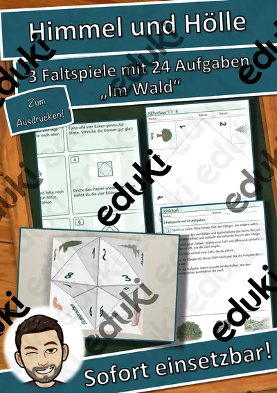
Himmel und Hölle: Im Wald – Gratis-Probe
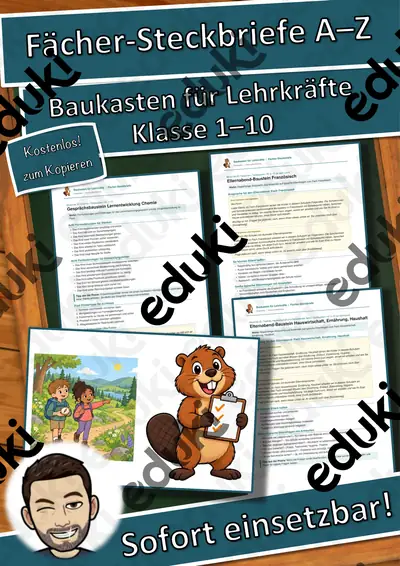
Fächer-Steckbriefe A–Z Klasse 1–10: Baukasten für Lehrkräfte – kostenlos
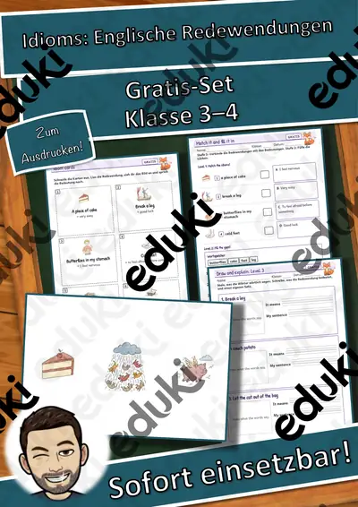
Englisch-Werkstatt: Idioms: Englische Redewendungen – kostenlos, Klasse 3–4

Schokoladen-Banderole Weihnachten: Druckvorlage für die Schokoladentafel mit 4 Motiven (Klasse 1–4)
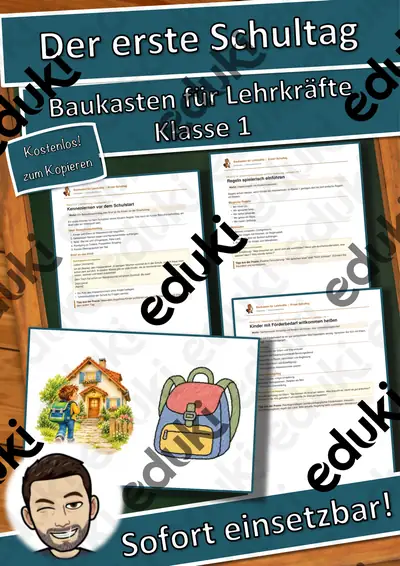
Der erste Schultag in Klasse 1: Baukasten für Lehrkräfte – kostenlos
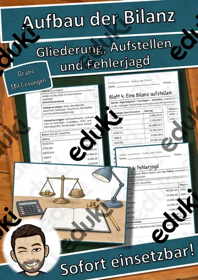
Aufbau der Bilanz – Arbeitsheft mit Lösungen (BwR 7, Realschule Bayern)

Domino-Werkstatt: Zahlen-Domino bis 100 – kostenlos, Klasse 1–2
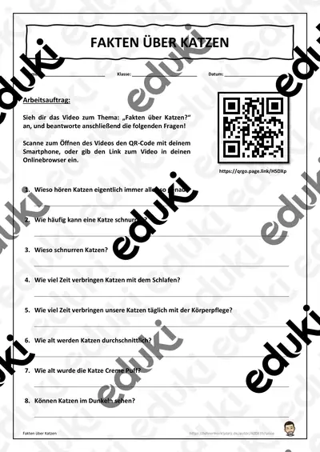
Fakten über Katzen - Homeschooling
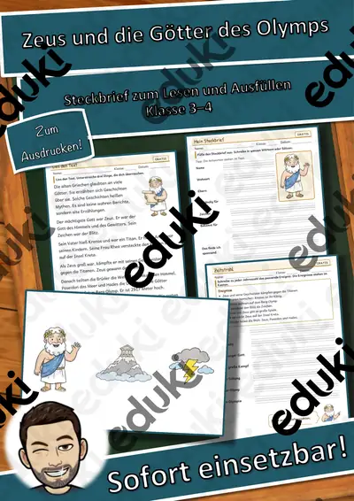
Persönlichkeiten-Werkstatt: Zeus – Steckbrief zum Lesen und Ausfüllen, Klasse 3–4 (kostenlos)
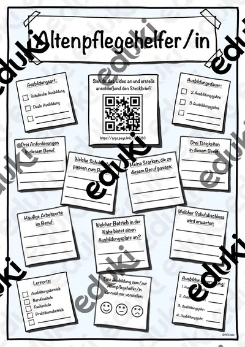
Berufe-Steckbrief Altenpflegehelfer/in
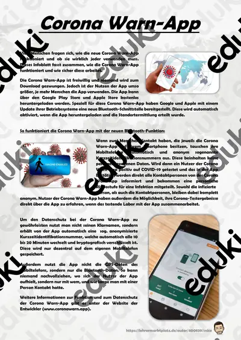
Corona Warn-App
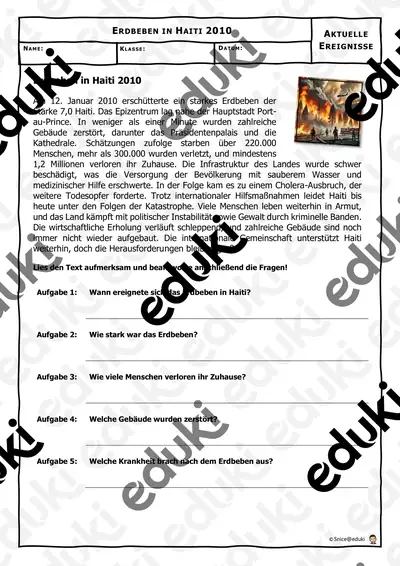
Erdbeben in Haiti - Rückblick - Aktuelle Ereignisse
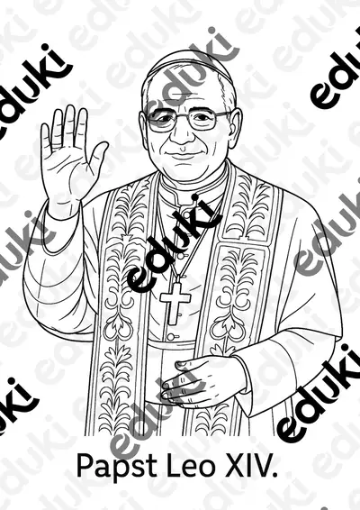
Ausmalbilder Papst Leo XIV.

Elternabend Klasse 1–10: Baukasten für Lehrkräfte – kostenlos
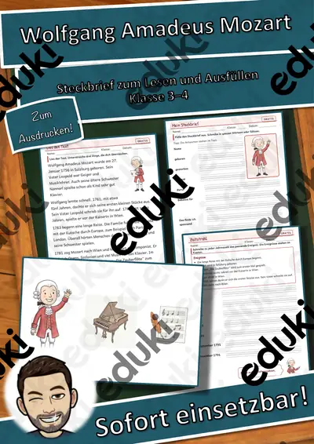
Persönlichkeiten-Werkstatt: Mozart – Steckbrief zum Lesen und Ausfüllen, Klasse 3–4 (kostenlos)

Himmel und Hölle: In der Stadt – Gratis-Probe
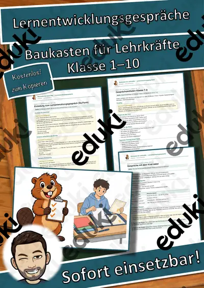
Lernentwicklungsgespräche Klasse 1–10: Baukasten für Lehrkräfte – kostenlos

Englisch-Werkstatt: I have, who has? Das Kartenspiel in der Schleife – kostenlos, Klasse 3–4

Große Tassen-Grußkarte mit Tasche: Druckvorlage Weihnachten mit 3 Figuren (Klasse 1–4)

Feriengrüße Fuchs: Tierbande Klassentier, Schreibanlass in 3 Stufen

Taschengeld – Arbeitsheft mit Lösungen (BwR 7, Realschule Bayern)
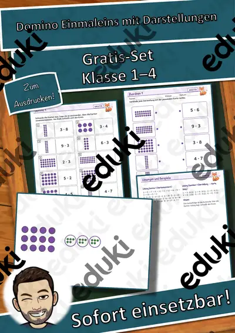
Domino-Werkstatt: Domino Einmaleins mit Darstellungen – kostenlos, Klasse 2–4

Lesespur: Das Geheimnis des Waldes (Lebensraum Wald) – Lesespurgeschichte mit Rätseln (Klasse 5)

Lesespur: Das Kloster im Mittelalter – Lesespurgeschichte mit Rätseln (Klasse 6)
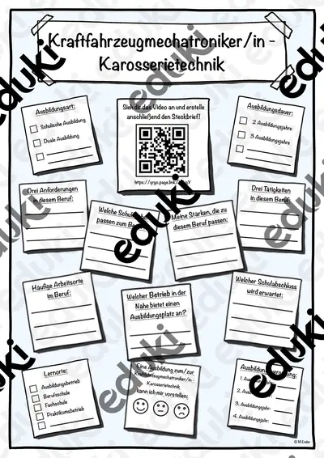
Steckbrief Ausbildungsberuf Kraftfahrzeugmechatroniker/in

Klammerkarten: In der Stadt – Gratis-Probe

Klassen-Werkstatt: Motivationsposter für die Klasse – kostenlos, Klasse 1–4

Englisch-Werkstatt: Tongue Teasers: Englische Zungenbrecher – kostenlos, Klasse 3–4

Rubbellos-Adventskalender für die Klasse: 24 Rubbelfelder, ausgefüllt und blanko (Klasse 1–4)

Gruppenschilder Fuchs: Tierbande Klassentier mit Rollenkarten, Klasse 1–4
Keine Materialien gefunden – versuch einen anderen Suchbegriff oder Filter.
Warum es kostenloses Material gibt
Wer Unterrichtsmaterial kauft, möchte vorher sehen, wie es aufgebaut ist. Die kostenlosen Materialien sind deshalb echte Arbeitsblätter, keine abgespeckten Proben. Du lädst sie herunter, setzt sie ein und entscheidest dann, ob dir der Stil zusagt.
Was du hier findest
Die Auswahl wechselt, deshalb nenne ich Familien statt Einzeltitel. Dazu gehören die Märchen-Werkstatt, die Englisch-Werkstatt, die Klassen-Werkstatt, die Bildkarten-Werkstatt, die Domino-Werkstatt und die Persönlichkeiten-Werkstatt. Baukästen für Lehrkräfte helfen bei organisatorischen Aufgaben, und Berufe-Steckbriefe unterstützen die Berufsorientierung.
Wie sie aufgebaut sind
Jedes Material erklärt sich selbst und kommt mit Lösung. Die Werkstätten bestehen aus kleinen Einheiten, die du einzeln oder zusammen einsetzt. Karten und Bilder sind druckfertig, sodass keine Vorbereitung nötig ist.
Wenn dir etwas gefällt
Die kostenlosen Titel zeigen den Stil des Katalogs. Wer mehr zu einem Thema sucht, findet es über Suche und Fachfilter, und die Fach- und Klassenseiten führen zu weiteren Materialien.
So nutzt du die Auswahl
Beginne mit einer Werkstatt, die zu deinem Fach passt. Die Englisch-Werkstatt eignet sich für Sprechanlässe, die Märchen-Werkstatt für Leseförderung, die Bildkarten-Werkstatt für Wortschatzarbeit und die Domino-Werkstatt für Wiederholung in Partnerarbeit. Wenn dir eine gefällt, findest du auf den Fach- und Klassenseiten weitere Materialien im gleichen Stil.
Die Baukästen für Lehrkräfte sind dagegen nicht für Kinder gedacht, sondern erleichtern Gespräche, Elternabende und Planung. Sie lassen sich bearbeiten und anpassen.
Qualität prüfen vor dem Kauf
Schau auf Layout, Verständlichkeit der Aufgaben und Vollständigkeit der Lösungen. Diese Merkmale gelten im ganzen Katalog, die kostenlosen Titel sind der direkteste Test dafür. Ein Hinweis noch: Die Liste ändert sich, deshalb lohnt es sich, ab und zu wiederzukommen.
Hinweis zur Nutzung
Gib die Dateien gern an Kolleginnen und Kollegen weiter, indem du auf diese Seite verweist. So bekommt jede Lehrkraft die aktuelle Fassung samt Lizenzhinweis.
Häufige Fragen
Ist das Material wirklich kostenlos?
Ja, du lädst es ohne Kauf herunter.
Darf ich es im Unterricht kopieren?
Ja, für den eigenen Unterricht. Die Lizenzhinweise stehen im Material.
Warum wechselt die Auswahl?
Der Katalog wird ergänzt, und die Liste zeigt immer aktuelle Titel.
Gibt es Material für alle Fächer?
Nicht für alle, der Schwerpunkt liegt auf Werkstätten und Hilfen für Lehrkräfte.